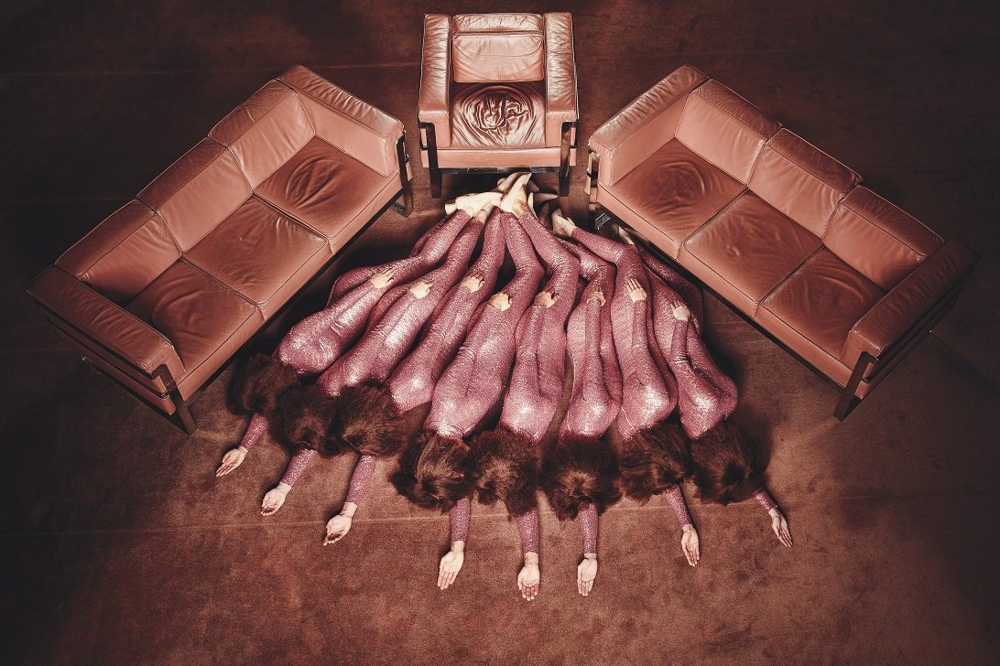
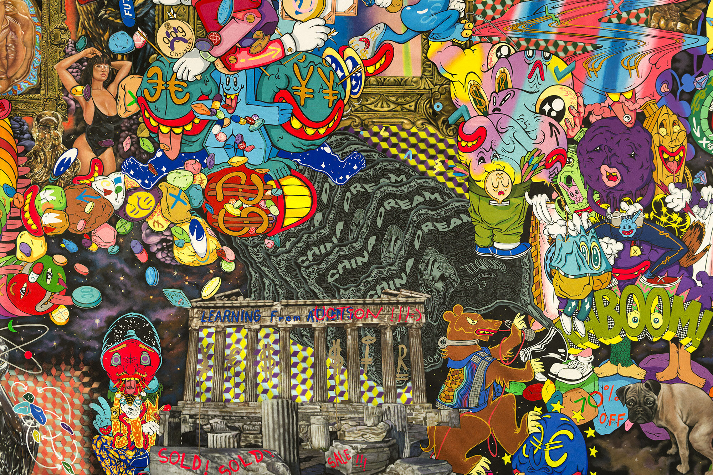
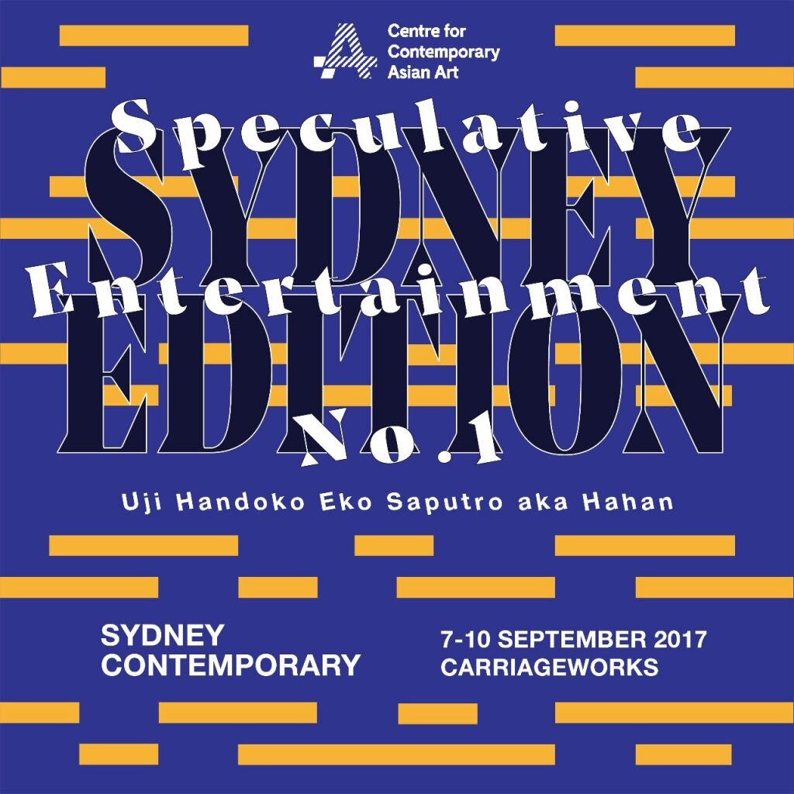
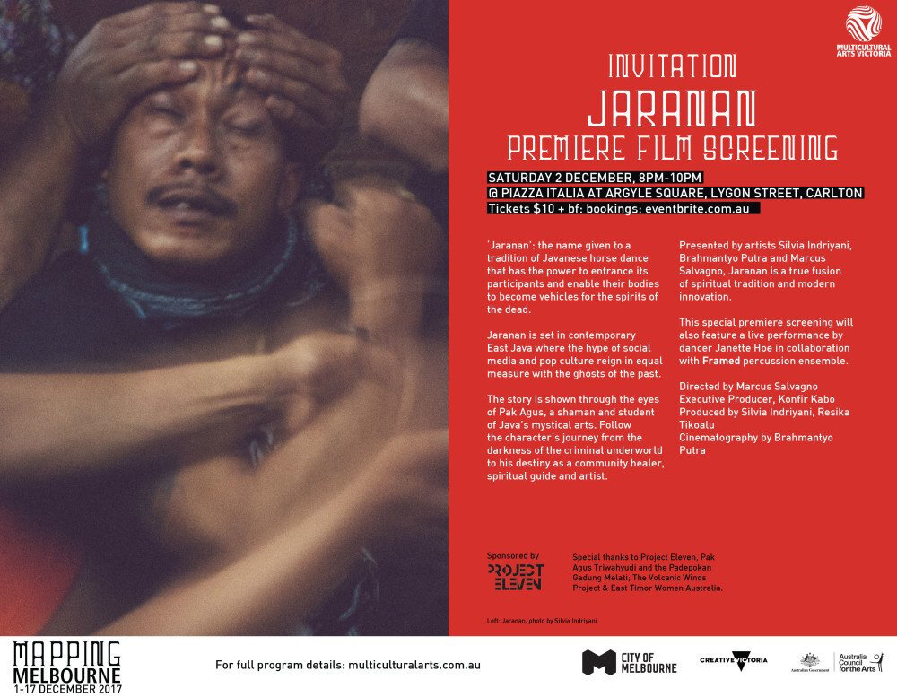
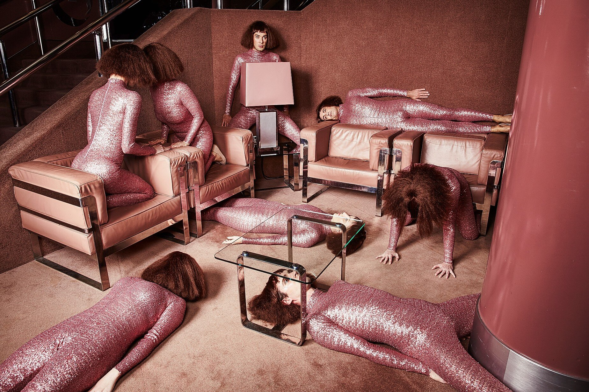
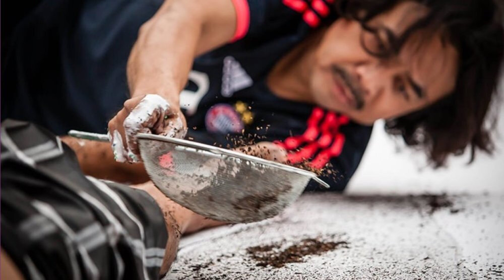

Featured work and image by Discordia.

Is there something truly universal nowadays, when human conception about value has been influenced by many factors and layered dimensions? What is more valuable when all of this factors and dimensions are detached? The answer then refers to “time”. Hahan observes that human’s process, actions, opportunities, predictions, and hopes cannot be separated from time.
4A Centre for Contemporary Asian Art and Hahan gave audiences a chance to become part of an experimental art market at Sydney Contemporary 2017 in Speculative Entertainment No. 1 Sydney Edition.
“Speculative Entertainment No.1” is an ongoing project that developed from Hahan’s experiments about time and privilege, as well as an interest to experiment with the art market and use it as medium. This work is intended to hack the art market, and particularly to hack the artwork collecting system which usually limited. This work was initially exhibited during ARTJOG 9 (2016), an annual artist-based art fair in Yogyakarta, and has also been presented in conjunction with 4A Centre for Contemporary Asian art at Art Central Hong Kong (2017).
This work consisted of a 7.5 m x 2.6 m painting which was divided into 1,619 square lots. Each lot was sized 10 cm square and the price for each lot was twice the entrance fee of the art fair. During the exhibition period at scheduled times, the audience could become “collectors” with the same opportunities, hopes, privileges, and speculations by choosing any lot they wanted at the venue. The audience members who purchased the lot(s) were encouraged to speculate by re-selling it according to their own speculative price and Hahan, as the artist, charged a 10% commission from the selling.


Jaranan - a documentary about the tradition of Javanese trance horse dancing supported by Project Eleven in partnership with Multicultural Arts Victoria.

Discordia took us through the darkest corners of the Arts Centre Melbourne, led by a sect of prawn-worshipping rose beige humans.
These professional absurdists attempted to prove that truth is stranger than fiction by forming an officially recognised religion in front of a live audience, using movement, an original score, sculpture and voice.
This group of artists converted to Discordianism earlier this year have been building their church of Holy Chaos ever since. The unveiling of their church will took place on 27 September with recruitment drives happening for five consecutive nights.
Departing from the Fairfax Studio foyer, the journey was narrated by the iconic voice of TV goddess Lee Lin Chin.
